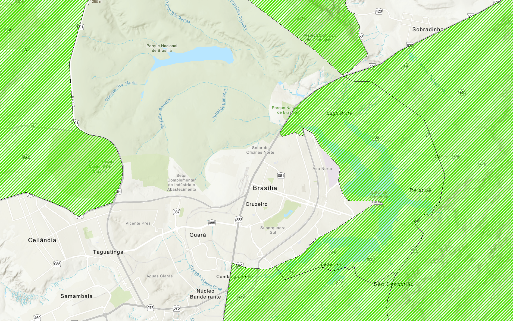

Pressupostos Estratégicos
Este estudo adotou, como premissa principal, a análise de um vertiporto voltado ao transporte de passageiros, e não de carga ou atendimento médico/emergencial. A justificativa é que o recorte em passageiros se alinha melhor ao objetivo de avaliar mobilidade urbana, integração modal e economia de tempo entre regiões administrativas do Distrito Federal, o aeroporto e a área central do Plano Piloto. No campo regulatório, a própria ANAC trata os vertiportos como infraestrutura que deve ser integrada à estrutura urbana, à acessibilidade e aos demais modais de transporte, o que reforça a adequação de um estudo voltado à circulação de pessoas. Além disso, o Aeroporto Internacional de Brasília já opera como um nó importante de conexão, atendido por diversas linhas de ônibus regulares, o que favorece sua leitura como hub de articulação de uma futura rede aérea urbana.
A opção por não priorizar, nesta etapa, aplicações de carga e emergenciais decorre de um critério de aderência ao problema estudado. A carga responde a uma lógica logística própria, distinta da mobilidade pendular urbana. Já a operação emergencial exige critérios específicos de atendimento, prioridade operacional, infraestrutura e regulação, além de já estar historicamente associada a meios aéreos dedicados. Por isso, para uma seleção preliminar de sítios em Brasília, o enfoque em passageiros foi considerado o mais coerente e tecnicamente justificável.
Fontes: ANAC – Vertiportos; ANAC – Sandbox Vertiportos/eVTOLs; Aeroporto Internacional de Brasília – Transporte Público; Aeroporto Internacional de Brasília – Informações Úteis.
AHP para Seleção de Local de Vertiporto
O projeto considera a seleção de 3 localidades para implantação do Vertiporto. Considerando o Aeroporto Internacional de Brasília - SBBR um vertiporto natural, resta a seleção de mais 2 sítios para o conjunto de vertiportos, os quais serão selecionados pela metodologia AHP.
Pré Seleção de Vertiportos
Para garantir a variabilidade de opções, características e comportamentos foram pré-selecionadas 2 alternativas no Plano Piloto e 2 alternativas nas RA.
A Rodoviária foi considerada uma alternativa com alta conectividade.
O Complexo 21 foi considerado uma demanda constante considerando eventos ao longo da semana e o perfil socioeconômico.
Ceilândia e Sobradinho foram escolhidos considerando localizações opostas entre si, maior volume populacional e potencial de ganho de tempo para deslocamento ao aeroporto ou Plano Piloto.
| Plano Piloto | RA |
|---|---|
| Rodoviária | Sobradinho |
| Complexo 21 | Ceilândia |
Sobradinho foi escolhido no eixo norte por combinar alta demanda pendular, forte dependência do sistema viário e posição estratégica intermediária, funcionando como hub regional dentro do DF capaz de captar fluxos de áreas mais distantes (como Planaltina) de forma mais eficiente.
Ceilândia foi selecionada no eixo oeste por apresentar forte geração de viagens, dependência relevante de transporte coletivo e melhor ganho de tempo em relação a Taguatinga, além de atuar como ponto de absorção regional para deslocamentos mais longos.
Planaltina não foi escolhida, apesar do alto potencial de economia de tempo, porque seu benefício se concentra mais na demanda local, enquanto Sobradinho oferece melhor lógica de rede como hub intermediário.
Taguatinga foi descartada pois, no modelo com hub no aeroporto, o ganho de tempo é baixo, tornando o deslocamento direto por carro mais competitivo e diminuindo a atratividade do vertiporto.
Nas RA foi necessário ainda definir o sítio exato para implantação. Tal escolha levou em consideração áreas centrais, próximas a comércios e abertas para facilitar infraestrutura. Sendo assim foi escolhido:
Sobradinho — Estádio Augustinho Lima
Ceilândia — Praça do Metrô

Sobradinho — Estádio Augustinho Lima

Ceilândia — Praça do Metrô
Definição dos Critérios
Foram selecionados 3 critérios principais para seleção do sítio: Conectividade, Tempo de Deslocamento e Restrições.
Para definir os 3 critérios principais foi realizado um brainstorm com o grupo elencando critérios possíveis, e depois foi realizada uma votação. Os 3 critérios selecionados foram os que apresentaram maior quantidade de votos.
| Critério | Votos |
|---|---|
| Conectividade | 5 |
| Tempo de Deslocamento | 5 |
| Restrições | 3 |
| População | 2 |
| Ruído | 0 |
| Distância | 0 |
A fim de medir cada critério por alternativa, optou-se por utilizar métodos objetivos para quantificar tais atributos, tornando o modelo mais consistente e robusto.
| Critério | Definição | Método de cálculo | Interpretação |
|---|---|---|---|
| Conectividade | Grau de integração dos modais e interligação a diversas localidades, de modo fácil e acessível. | Quantidade de modais a 10 min de distância caminhando. Pesos: Aéreo = 1, Metroviário = 2, Rodoviário = 3.* | Quanto maior melhor. |
| Tempo de Deslocamento | Tempo de referência de deslocamento por modais "padrão" até o vertiporto natural — Aeroporto Internacional de Brasília. | Tempo médio entre o sítio e o aeroporto na hora pico, considerando carro e transporte público. (em minutos) | Quanto maior melhor. |
| Restrições | Limitações para operação devido a restrições legais, operacionais e/ou ambientais. | Quantidade de restrições em relação ao Espaço Aéreo, à municipalidade e ao meio ambiente. Cada restrição equivale a 1 ponto. | Quanto menor melhor. |
*Pesos arbitrados levando em consideração análises como capacidade, flexibilidade, custo, capilaridade, tempo e escala.
Estrutura para análise do método AHP

Memória de Cálculo
1. Dados de Entrada
Conectividade
| Alternativa | Detalhamento | Cálculo |
|---|---|---|
| Rodoviária | Rodoviária metropolitana, rodoviária interurbana/ônibus, metrô | (2×3 + 1×2) = 8 |
| Complexo 21 | Heliponto, ônibus | (1×3 + 1×1) = 4 |
| Sobradinho | Rodoviária metropolitana, rodoviária interurbana/ônibus | (2×3) = 6 |
| Ceilândia | Metrô, ônibus | (1×2 + 1×3) = 5 |
Tempo de Deslocamento
| Alternativa | Detalhamento | Cálculo |
|---|---|---|
| Rodoviária | 53 min de transporte público e 14 min de carro | (53 + 14) / 2 = 33,5 min |
| Complexo 21 | 56 min de transporte público e 18 min de carro | (56 + 18) / 2 = 37 min |
| Sobradinho | 103 min de transporte público e 40 min de carro | (103 + 40) / 2 = 71,5 min |
| Ceilândia | 72 min de transporte público e 50 min de carro | (72 + 50) / 2 = 61 min |
Restrições
| Alternativa | Detalhamento | Cálculo |
|---|---|---|
| Rodoviária | 1 AGA (PBZPA SBBR) e 1 Patrimônio Cultural | (1 + 1) = 2 |
| Complexo 21 | 1 AGA (PBZPA SBBR) e 1 Patrimônio Cultural | (1 + 1) = 2 |
| Sobradinho | N/A | 0 |
| Ceilândia | 1 AGA (PBZPA SBBR) | (1) = 1 |
Detalhamento das Restrições de Espaço Aéreo → AGA + EAC + REAH

Restrições Ambientais → Área de Proteção Ambiental - APA

Restrições Ambientais → APA Planalto Central

Quadro Resumo
| Alternativa | Conectividade | Tempo | Restrições |
|---|---|---|---|
| Rodoviária | 8 | 33,5 | 2 |
| Complexo 21 | 4 | 37 | 2 |
| Sobradinho | 6 | 71,5 | 0 |
| Ceilândia | 5 | 61 | 1 |
2. Normalização
Conectividade = valor / máximo
Tempo = valor / máximo
Restrições = 1 / (1 + restrições)
| Alt | Conectividade | Tempo | Restrições |
|---|---|---|---|
| A — Rodoviária | 1,000 | 0,469 | 0,333 |
| B — Complexo 21 | 0,500 | 0,517 | 0,333 |
| C — Sobradinho | 0,750 | 1,000 | 1,000 |
| D — Ceilândia | 0,625 | 0,853 | 0,500 |
3. Matriz AHP
| Conectividade | Tempo | Restrições | |
|---|---|---|---|
| Conectividade | 1 | 0,333 | 5 |
| Tempo | 3 | 1 | 7 |
| Restrições | 0,2 | 0,143 | 1 |
Pesos Calculados
| Critério | Peso |
|---|---|
| Conectividade | 0,283 |
| Tempo | 0,643 |
| Restrições | 0,074 |
4. Cálculo do Score
Score = (C × 0,283) + (T × 0,643) + (R × 0,074)
| Alt | Cálculo | Score |
|---|---|---|
| A — Rodoviária | (1×0,283) + (0,469×0,643) + (0,333×0,074) | 0,609 |
| B — Complexo 21 | (0,5×0,283) + (0,517×0,643) + (0,333×0,074) | 0,498 |
| C — Sobradinho | (0,75×0,283) + (1×0,643) + (1×0,074) | 0,929 |
| D — Ceilândia | (0,625×0,283) + (0,853×0,643) + (0,5×0,074) | 0,762 |
5. Ranking Final
| Posição | Alternativa | Score |
|---|---|---|
| 1º | C — Sobradinho | 0,929 |
| 2º | D — Ceilândia | 0,762 |
| 3º | A — Rodoviária | 0,609 |
| 4º | B — Complexo 21 | 0,498 |
6. Análise de Sensibilidade
Sensibilidade Marginal
| Alt | dScore/dC | dScore/dT | dScore/dR |
|---|---|---|---|
| A — Rodoviária | 1,000 | 0,469 | 0,333 |
| B — Complexo 21 | 0,500 | 0,517 | 0,333 |
| C — Sobradinho | 0,750 | 1,000 | 1,000 |
| D — Ceilândia | 0,625 | 0,853 | 0,500 |
Impacto de +1% no Peso do Tempo
| Alt | ΔScore |
|---|---|
| A — Rodoviária | +0,0047 |
| B — Complexo 21 | +0,0052 |
| C — Sobradinho | +0,0100 |
| D — Ceilândia | +0,0085 |
7. Conclusão
A alternativa C (Sobradinho) apresenta desempenho superior em todos os cenários analisados, com alta robustez devido à dominância nos critérios de tempo e restrições.
O trade-off principal do modelo ocorre entre as alternativas A (conectividade) e D (tempo), evidenciando o impacto estratégico da definição de pesos.